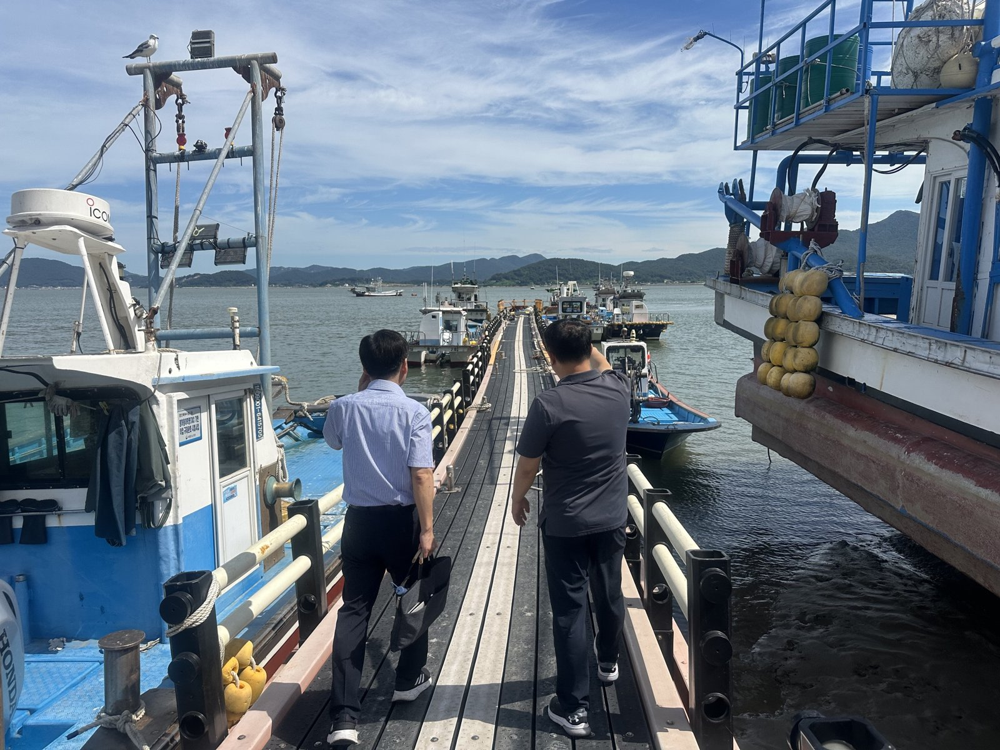

바다에서도 내 어장 경계 확인…인천시 앱 '인천수산정보' 출시
어업면허어장 618곳·공간정보 26종 담아
서버 없이 브이월드 지도로 만들어
AI경제저널=김갑봉 기자 | 인천시 수산자원연구소가 모바일 앱 「인천수산정보」를 구글 플레이에 내놨다고 4일 밝혔다. 인천 바다의 어장 경계와 조업 정보를 조업 현장에서 휴대전화로 확인하는 앱이다.
앱에는 어업면허어장 618곳(2026년 10월 기준)과 어항·인공어초·조업 관련 공간정보 26종이 담겼다. 날씨·조석·수온도 한 화면에서 본다.
어업인은 바다 위에서 자기 위치와 어장 경계를 견주고 조업 제한구역을 확인할 수 있다. 육지의 지적도처럼 바다에도 위치 정보를 쓰게 된 셈이다.

흩어진 어장 자료를 지도 하나에
지금까지 어장 정보는 대장과 도면, 엑셀, 보고서로 흩어져 있었다. 연구소는 별도 용역이나 서버 구축 없이 국토교통부 공간정보 플랫폼 브이월드 지도로 앱을 만들었다.
자율관리활동일지 같은 현장 문서도 앱에서 쓴다. 이 앱은 국토교통부가 주최한 제8회 공간정보 활용·아이디어 경진대회 활용사례 분야에서 대상인 국토교통부 장관상을 받았다.
어촌의 일손과 소득을 지키는 행정
인천시는 어촌의 새 일손과 소득원도 함께 챙기고 있다. 시는 9월 28일부터 10월 30일까지 「제9기 인천 귀어학교」를 운영한다고 9월에 밝혔다. 선발된 예비 어업인 25명이 대상이다.
수산기술지원센터는 2027년부터 2년 동안 약 6800만 원을 들여 돌비늘백합 시범양식에 나선다. 기후변화로 바지락·동죽 폐사가 잦아지자 대체 품종을 찾는 사업이다.
소득 지원도 이어진다. 인천시는 올해 농어업인 수당으로 농어가당 연 60만 원을 지급했고, 2029년 이후 연 80만 원까지 올릴 계획이다.
앱은 이런 어장 행정의 바탕 정보를 어업인 손에 쥐여 준다. 김익중 인천시 농수산식품국장은 "어업인의 의견을 반영해 앱 기능을 지속적으로 개선하겠다"고 말했다.
참고문헌
- 인천광역시 수산자원연구소(2026). 인천시, 어장 경계·조업정보 한눈에…해양수산 앱'인천수산정보'출시(보도자료). 2026년 11월 4일. https://www.incheon.go.kr/IC010205/view?repSeq=DOM_0000000015886609
- 인천광역시 수산기술지원센터(2026). 인천시, 제9기 귀어학교 운영...예비 어업인 어촌 정착 지원 본격화(보도자료). 2026년 9월 29일. https://www.incheon.go.kr/IC010205/view?repSeq=DOM_0000000015648959
- 인천광역시 수산기술지원센터(2026). 인천시, 돌비늘백합 시범양식으로 어업인 새로운 소득원 발굴(보도자료). 2026년 9월 23일. https://www.incheon.go.kr/IC010205/view?repSeq=DOM_0000000015607041
- 인천광역시 농축산과(2026). 인천시, 농어업인 수당 단계적 확대… 2029년 연 80만 원 목표(보도자료). 2026년 9월 29일. https://www.incheon.go.kr/IC010205/view?repSeq=DOM_0000000015651920
- 인천광역시 수산과(2026). 인천시, 폭염 속 어촌·어항 현장점검… 양식장 피해 최소화 총력(보도자료). 2026년 8월 12일. https://www.incheon.go.kr/IC010205/view?repSeq=DOM_0000000015315671
[사진 출처]
- [사진1] 인천광역시 보도자료 「인천시, 폭염 속 어촌·어항 현장점검… 양식장 피해 최소화 총력」 붙임 사진 image01, 공공누리 출처표시, 2026.8.12., https://www.incheon.go.kr/IC010205/view?repSeq=DOM_0000000015315671
관련기사
- 인천 앞바다 쓰레기 9월까지 4299톤 수거…섬 쓰레기 1170톤 뭍으로
- 인천시, 여객선 운임지원 2027년 손질…7월 끊긴 타 시·도민 지원은 50% 검토
- 인천항 크루즈 올해 113항차·내년 132항차…시, 지역축제·상권 연계 관광 강화
- 강화남단 경제자유구역, 지정 요청 11개월째…2차 발전계획에 담는다
저작권자 © AI경제저널 무단전재 및 재배포, AI학습 및 활용 금지